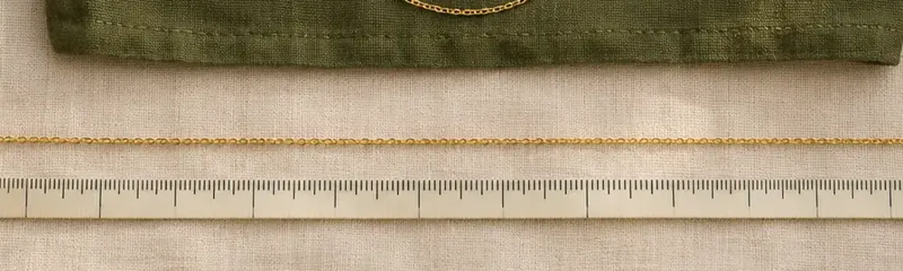
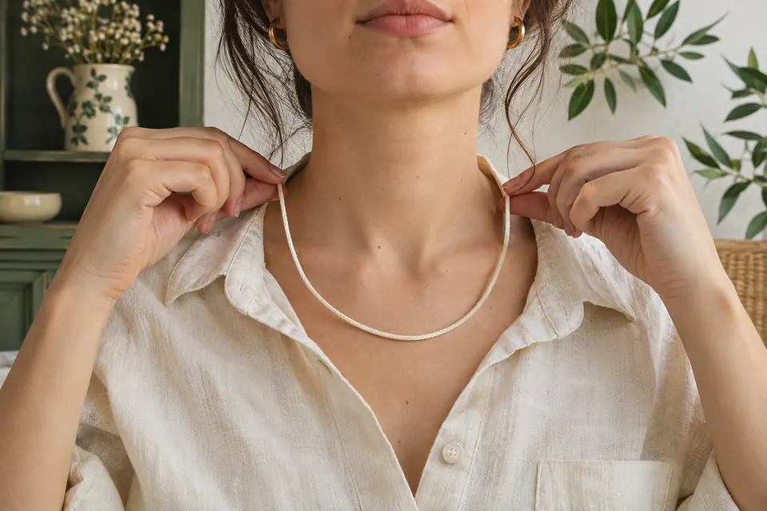
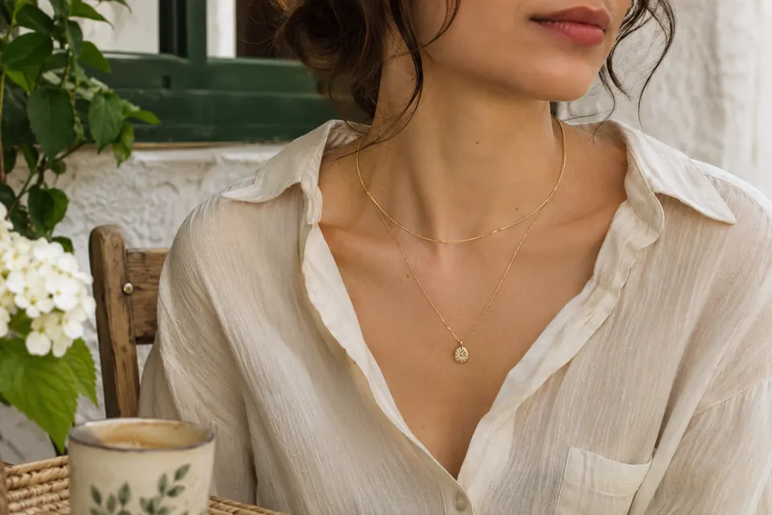

Kolye uzunluğunu seçmenin en kolay yolu, rahat kullandığın bir zinciri açık halde ölçmek ve aynı uzunluğu giyeceğin kıyafetle denemektir. Elinde örnek yoksa mezura veya bir ip kullan. Satıcıdan ölçünün kapamayı ve varsa uzatma zincirini kapsayıp kapsamadığını sor. Kolyenin nerede duracağını zincirin uzunluğuyla birlikte boyun çevresi, kolye ucunun boyu ve kıyafetin yakası belirler.
40, 45, 50 ve 60 cm kolye uzunlukları
Tablodaki ölçüleri ilk deneme için kullan. Aynı uzunluğun herkeste aynı noktaya geleceğini düşünme. Özellikle ağır veya uzun bir kolye ucunun alt kenarı, zincirin oluşturduğu kıvrımdan daha aşağıya inebilir.
| Uzunluk | Denemek için | Kontrol et |
|---|---|---|
| 40 cm | Boyna yakın, kısa görünüm | Düğme veya yaka ile temas |
| 45 cm | Kısa bir zincir, açık yaka | Köprücük kemiğine göre duruş |
| 50 cm | Biraz daha aşağıda duran zincir | Kolye ucunun kumaşa oturuşu |
| 60 cm | Uzun zincir, düz renk üst | Otururken veya eğilirken hareket |
Mevcut bir kolyenin boyu nasıl ölçülür?
- Kolye kapamasını aç ve zinciri masaya düz yatır. Halkalar burulmuşsa önce düzelt.
- Kapamanın birleşeceği iki uç arasını mezurayla ölç. Zinciri gerdirerek ölçüyü değiştirme.
- Uzatma halkaları varsa seçtiğin halkaya kadar tekrar ölç. Kısa ve uzun ayarı ayrı not et.
- Uç zincire takılıysa, ürün bilgisinde belirtilen zincir boyuna kolye ucunun düşey yüksekliğini ekleme. Ucun ne kadar aşağı düştüğünü ayrıca dene.
Kapalı halde ikiye katlanmış zinciri uçtan uca ölçersen toplam uzunluğun yalnızca bir bölümünü görürsün. Düz ölçüm özellikle hediye almak için mevcut bir modeli karşılaştırırken daha anlaşılırdır. Gördüğün kolyenin uzunluk bilgisi belirsizse, “Kapama ve uzatma halkası dahil mi?” diye sor. Aynı uzunluk etiketi farklı satıcılarda aynı ayarı ifade etmeyebilir.

Örnek zincir yoksa iple nasıl denenir?
Esnemeyen bir ipi takacağın üstle birlikte, zincirin durmasını istediğin seviyede tut. Ense tarafında iki ucun buluştuğu noktaları işaretle. İpi çıkarıp işaretlerin arasını ölç. Ölçüyü aynanın karşısında bir kez daha dene. Hafif bir ip, metal zincirin ağırlığını tam taklit etmez. Kolye ucu uzunsa ipi yalnızca zincirin başlayacağı konumu görmek için kullan.
Üstü otururken ve ayakta dene. Gömleğin gün içinde açıp kapattığın düğmesi, zincirin görünür uzunluğunu değiştirebilir. Yüksek yakada zincir kumaşın üzerinde, açık yakada ise doğrudan cilt üzerinde durabilir. Benzer bir fark kışın atkı takıldığında da ortaya çıkar. En sık giyeceğin kıyafete göre karar vermek, yalnızca mezura sayısına bakmaktan daha işe yarar.

İki kolye için uzunluklar nasıl seçilir?
Bir zinciri ana parça olarak seç ve ikinci zincirin ucunun ilkinden farklı bir seviyede görünmesini sağla. Örneğin 45 ve 50 cm uzunluklarını beraber dene. Uçlardan biri uzun veya zincirlerden biri çok kalınsa aradaki mesafeyi aynada kontrol et. İki zincirin birbirine dolanıp dolanmadığını görmek için başını çevir, ceketi giy ve çantanın askısını omzuna al.
Benzer kalınlıkta iki zincir kıyafet üzerinde çizgi gibi durabilir. Zincirlerden birine küçük bir uç takmak, ikinciyi ne kadar görünür istediğini anlamana yardım eder. Renk ve yaka örnekleri için günlük takı kombinleri rehberi bu ölçü adımlarını tamamlar.

Kolye hediye ederken ölçü nasıl seçilir?
Kişinin sık kullandığı bir zincir varsa boyunu öğren ve üzerinde uzatma olup olmadığına bak. Ölçüyü soramıyorsan birkaç halkadan kapatılabilen bir zincir, kıyafete göre ayar yapmayı kolaylaştırır. Satıcıdan kısa ve uzun ayarı ayrı ayrı söylemesini iste. İnce zinciri tercih eden biri için aynı uzunluktaki ağır bir zincir farklı hissedilebilir.
Döşemealtı Yeniköy’de seçim yaparken takı ve aksesuar kategorisindeki örneklerden başlayabilirsin. Mağazada zinciri kendi kıyafetine benzer bir yaka üzerinde düşün. Kapamayı bir elinle rahat açıp açamadığını ve kolye ucunun zincire sabitlenip sabitlenmediğini de kontrol et.
Sık Sorulan Sorular
45 cm kolye nerede durur?
Bazı kişilerde köprücük kemiğine yakın, bazılarında daha yukarıda veya aşağıda durabilir. Boyun çevresi ve zincirin biçimi sonucu değiştirir. Aynı ölçüyü iple denemek daha doğru fikir verir.
50 cm kolye uzun mu?
Kısa zincire kıyasla daha aşağı iner. Görünüm boyun çevresine, kıyafete ve kolye ucuna bağlıdır. Uzunluk seçimini kendi üzerinde deneyerek yap.
Kolye uzunluğuna kolye ucu dahil mi?
Zincir uzunluğu ile kolye ucunun boyu genellikle ayrı ölçülerdir. Ürün açıklamasını kontrol et. Özellikle sabit uçlu modellerde takının toplam düşüşünü de sor.
Uzatma zinciri ölçüye dahil mi?
Ürün bilgisine göre değişir. Örneğin 45 cm zincire 5 cm uzatma eklendiği belirtiliyorsa son halka yaklaşık 50 cm ayar verir. Satıcıdan başlangıç ve son ayarı doğrula.
Mezura yoksa kolye nasıl ölçülür?
Esnemeyen bir ip kullan. İpi kolyenin düz uzunluğuna eşleştir, başlangıç ve bitişi işaretle. Ardından iki işaretin arasını cetvelle ölç.